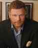
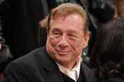

< < < Back
5 People That National Review Hates More Than Admitted Pedophile Todd Nickerson – Return Of Kings
This past week, the Internet exploded in justifiable rage at a Salon article titled “I’m a Pedophile, But Not a Monster” by Todd Nickerson. In the article, Nickerson claims to identify as a pedophile—though he also claims that he has never had sex with children—and argues that he deserves understanding for his sexual predilections.
Most everyone recognized Salon’s article for what it was: a leftist attempt to normalize child molestation in the same way they normalized open homosexuality, transsexuality and other sexual perversions.
Everyone, it seems, except National Review.
Long considered the standard bearer of cuckservatism, National Review has decided to stand athwart humanity yelling “FUCK YOU, DAD!” In a spectacularly tone-deaf article, token Limey Charles C.W. Cooke defended both Nickerson for writing the piece and Salon for publishing it. Even more ridiculously, Cooke invokes Christianity in his pedophile apologia. I must have missed that Beatitude in catechism class: “Blessed are the kiddie diddlers, for they shalt inherit the daycare centers.”
Given how absurd and suicidal it is for a “right-wing” publication to defend child molestation, Cooke’s piece serves as a stark reminder of how toxic National Review is to American conservatism. National Review and its founder, the mercifully deceased William Buckley, built their reputations on purging “undesirable” elements from the conservative movement to wide accolades from the left, transforming a political movement focused on preserving American culture into a clearinghouse for Zionists and corporate whores.
To this end, here are five people that National Review thinks are worse than pedophile Todd Nickerson…
1. John Derbyshire, conservative writer
John Derbyshire is a conservative columnist who wrote for National Review up until three years ago, when outrage exploded over an article he published at Taki’s Magazine (full disclosure: I have written for Takimag in the past and met Derbyshire at this year’s American Renaissance conference, but we have no connections beyond that) titled “The Talk: Nonblack Version.” In his column, Derbyshire made a number of rational arguments on how whites can cope with the very real threat of black-on-white crime in the U.S.
Derbyshire was subsequently targeted by social justice warriors, with Gawker dubbing his piece the “most racist article possible” and a bevy of left-wing publications calling for his termination from National Review. Editor Rich Lowry gave in to the lynch mob, announcing Derb’s firing via a blog post that was so spectacularly cowardly that Lowry refused to refer to Takimag by name, instead calling it a “webzine.” Derb’s termination from National Review also threatened to leave him destitute, as he was undergoing chemotherapy at the time.
2. Donald Trump, businessman and politician
Along with the rest of the cuckservative movement, National Review has joined the mob of nancyboys mewling for Donald Trump’s head. Most recently, Cuckmaster General Rich Lowry—the same guy who fired one of his own writers because of a left-wing lynch mob—had the audacity to go on Fox News and claim that Carly Fiorina had “cut off” Trump’s balls “with the precision of a surgeon” during the last GOP presidential debate. Lowry is so prissy that he can’t even spell out “balls” in a Tweet:
Lowry’s flailing attempts at manliness are part of a concerted effort by cuckservatives to bring down Trump by claiming that Fiorina won the last presidential debate. Not only does it show how sad the anti-Trump conservatives have become—that their new standard bearer is a woman who lost the only other political race she competed in by a 10-point margin—it doesn’t even come close to reality.
Every poll released after the debate shows Trump maintaining a comfortable lead over the other candidates; while Fiorina did receive a bump, it came primarily at the expense of Ben Carson and other minor contenders.
3. Mark Steyn, writer and free speech activist

Mark Steyn is a Canadian author known for standing up for free speech in the face of leftist totalitarianism: he successfully defended himself from Canada’s nightmarish “human rights” tribunals when they tried to prosecute him for “Islamophobia,” and he was also the victim of a frivolous “defamation” lawsuit filed by global warming alarmist Michael Mann. Neither of these saved Steyn’s head from National Review’s chopping block when he made the mistake of siding with Duck Dynasty’s Phil Robertson two years ago, who was being targeted by radical leftists for his supposedly “anti-gay” remarks.
In a spectacularly screechy post, National Review managing editor Jason Lee Steorts furiously clutched his pearls in response to Steyn’s “derogatory language,” urging conservatives to show more “civility” in their arguments. Steyn was subsequently shoved out the door at National Review, leaving Steorts and his colleagues to keep writing scintillating pieces on why conservatives need to endorse gay marriage.
4. Ann Coulter, conservative author and spokesperson
Ann Coulter has managed to stay popular and relevant in our shifting media landscape by being unafraid to challenge societal taboos, including the taboos of the conservative movement. Most recently, Coulter drew fire after she criticized the excessive deference to Israel that Republican presidential candidates showed in the recent debate; half of the candidates responded to the question “What will America look like after you become president?” by mentioning Israel, a foreign country:
In their indefatigable fashion, National Review immediately began sharpening the knives in response to Coulter’s comments. David French shrieked that Coulter was “pander[ing]” to “white nationalists,” then after facing a backlash for his sanctimony, followed up with an article stating that calling people “cuckservative” is bad, mmmkay?
5. Donald Sterling, businessman and former NBA team owner

Donald Sterling is an entrepreneur and the former owner of the L.A. Clippers basketball team. Last year, Sterling was banned from the NBA for life, fined $2.5 million, and forced to sell the Clippers after a recording of a private conversation in which he made purportedly “racist” remarks was leaked to the media by his mistress, V. Stiviano.
https://twitter.com/ThaRightStuff/status/646454969512517632
Unsurprisingly, National Review lit their torches and joined in the stampede to crucify Sterling. In a cringeworthy “me-too” piece, Deroy Murdock declared that Sterling’s comments represented “real racism” and claimed that left-wing accusations of bigotry should meet the “Sterling Standard.” How’s that working out for you, bub?
Even the most cursory glance at National Review and William Buckley’s career shows that both have been a cancer on American conservatism for decades. No better evidence of this can be found in the fact that it is the left—the people who conservatives are supposed to fight—who praise National Review for its “civility” and “sanity.” The magazine’s most enduring achievement has been shaping conservatism into controlled opposition, rolling over to the left on every issue save for Israel and corporate tax cuts.
The continuing ascent of Donald Trump in the presidential race and the ongoing meltdown of movement conservatives and GOP cucksultants shows that National Review and other, similar outlets have lost their gatekeeping power. With the rise of the alternative right and neomasculinity, countless men and women are finding an outlet for their discontent with both Western society and the impotence of its so-called defenders.
National Review’s defense of pedophilia is just another data point showing their increasing irrelevance.
Read Next: Why Do Hollywood SJWs Still Defend This Admitted Pedophile?